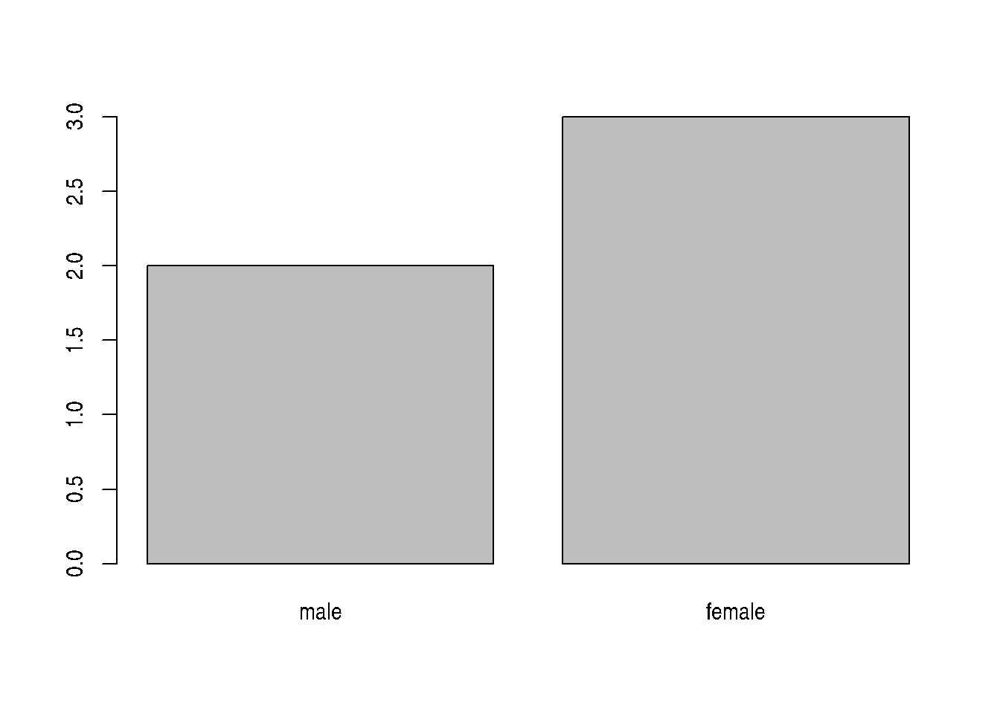

Chapter 3 Starting with data
Learning Objectives
- Describe what a data frame is.
- Load external data from a .csv file into a data frame.
- Summarize the contents of a data frame.
- Describe what a factor is.
- Convert between strings and factors.
- Reorder and rename factors.
- Change how character strings are handled in a data frame.
- Format dates.
- Export and save data.
3.1 Presentation of the Survey Data
We are studying the species repartition and weight of animals caught in plots in our study area. The dataset is stored as a comma separated value (CSV) file. Each row holds information for a single animal, and the columns represent:
| Column | Description |
|---|---|
| record_id | Unique id for the observation |
| month | month of observation |
| day | day of observation |
| year | year of observation |
| plot_id | ID of a particular plot |
| species_id | 2-letter code |
| sex | sex of animal (“M”, “F”) |
| hindfoot_length | length of the hindfoot in mm |
| weight | weight of the animal in grams |
| genus | genus of animal |
| species | species of animal |
| taxon | e.g. Rodent, Reptile, Bird, Rabbit |
| plot_type | type of plot |
We are going to use the R function download.file() to download the CSV file that contains the survey data from figshare, and we will use read.csv() to load into memory the content of the CSV file as an object of class data.frame. Inside the download.file command, the first entry is a character string with the source URL (“https://ndownloader.figshare.com/files/2292169”). This source URL downloads a CSV file from figshare. The text after the comma (“data/portal_data_joined.csv”) is the destination of the file on your local machine. You’ll need to have a folder on your machine called “data” where you’ll download the file. So this command downloads a file from figshare, names it “portal_data_joined.csv,” and adds it to a preexisting folder named “data.”
download.file(url="https://ndownloader.figshare.com/files/2292169",
destfile = "data/portal_data_joined.csv")You are now ready to load the data:
surveys <- read.csv("data/portal_data_joined.csv")This statement doesn’t produce any output because, as you might recall, assignments don’t display anything. If we want to check that our data has been loaded, we can see the contents of the data frame by typing its name: surveys.
Wow… that was a lot of output. At least it means the data loaded properly. Let’s check the top (the first 6 lines) of this data frame using the function head():
head(surveys)## record_id month day year plot_id species_id sex hindfoot_length weight
## 1 1 7 16 1977 2 NL M 32 NA
## 2 72 8 19 1977 2 NL M 31 NA
## 3 224 9 13 1977 2 NL NA NA
## 4 266 10 16 1977 2 NL NA NA
## 5 349 11 12 1977 2 NL NA NA
## 6 363 11 12 1977 2 NL NA NA
## genus species taxa plot_type
## 1 Neotoma albigula Rodent Control
## 2 Neotoma albigula Rodent Control
## 3 Neotoma albigula Rodent Control
## 4 Neotoma albigula Rodent Control
## 5 Neotoma albigula Rodent Control
## 6 Neotoma albigula Rodent Control## Try also
## View(surveys)Note
read.csv assumes that fields are delineated by commas, however, in several countries, the comma is used as a decimal separator and the semicolon (;) is used as a field delineator. If you want to read in this type of files in R, you can use the read.csv2 function. It behaves exactly like read.csv but uses different parameters for the decimal and the field separators. If you are working with another format, they can be both specified by the user. Check out the help for read.csv() by typing ?read.csv to learn more. There is also the read.delim() for in tab separated data files. It is important to note that all of these functions are actually wrapper functions for the main read.table() function with different arguments. As such, the surveys data above could have also been loaded by using read.table() with the separation argument as ,. The code is as follows:
surveys <- read.table(file="data/portal_data_joined.csv", sep=",", header=TRUE)The header argument has to be set to TRUE to be able to read the headers as by default read.table() has the header argument set to FALSE.
3.2 What are data frames?
Data frames are the de facto data structure for most tabular data, and what we use for statistics and plotting.
A data frame can be created by hand, but most commonly they are generated by the functions read.csv() or read.table(); in other words, when importing spreadsheets from your hard drive (or the web).
A data frame is the representation of data in the format of a table where the columns are vectors that all have the same length. Because columns are vectors, each column must contain a single type of data (e.g., characters, integers, factors). For example, here is a figure depicting a data frame comprising a numeric, a character, and a logical vector.

We can see this when inspecting the structure of a data frame with the function str():
str(surveys)## 'data.frame': 34786 obs. of 13 variables:
## $ record_id : int 1 72 224 266 349 363 435 506 588 661 ...
## $ month : int 7 8 9 10 11 11 12 1 2 3 ...
## $ day : int 16 19 13 16 12 12 10 8 18 11 ...
## $ year : int 1977 1977 1977 1977 1977 1977 1977 1978 1978 1978 ...
## $ plot_id : int 2 2 2 2 2 2 2 2 2 2 ...
## $ species_id : Factor w/ 48 levels "AB","AH","AS",..: 16 16 16 16 16 16 16 16 16 16 ...
## $ sex : Factor w/ 3 levels "","F","M": 3 3 1 1 1 1 1 1 3 1 ...
## $ hindfoot_length: int 32 31 NA NA NA NA NA NA NA NA ...
## $ weight : int NA NA NA NA NA NA NA NA 218 NA ...
## $ genus : Factor w/ 26 levels "Ammodramus","Ammospermophilus",..: 13 13 13 13 13 13 13 13 13 13 ...
## $ species : Factor w/ 40 levels "albigula","audubonii",..: 1 1 1 1 1 1 1 1 1 1 ...
## $ taxa : Factor w/ 4 levels "Bird","Rabbit",..: 4 4 4 4 4 4 4 4 4 4 ...
## $ plot_type : Factor w/ 5 levels "Control","Long-term Krat Exclosure",..: 1 1 1 1 1 1 1 1 1 1 ...3.3 Inspecting data.frame Objects
We already saw how the functions head() and str() can be useful to check the content and the structure of a data frame. Here is a non-exhaustive list of functions to get a sense of the content/structure of the data. Let’s try them out!
Size:
dim(surveys)- returns a vector with the number of rows in the first element, and the number of columns as the second element (the dimensions of the object)nrow(surveys)- returns the number of rowsncol(surveys)- returns the number of columns
Content:
head(surveys)- shows the first 6 rowstail(surveys)- shows the last 6 rows
Names:
names(surveys)- returns the column names (synonym ofcolnames()fordata.frameobjects)rownames(surveys)- returns the row names
Summary:
str(surveys)- structure of the object and information about the class, length and content of each columnsummary(surveys)- summary statistics for each column
Note: most of these functions are “generic”, they can be used on other types of objects besides data.frame.
► Question
Based on the output of str(surveys), can you answer the following questions?
- What is the class of the object
surveys? - How many rows and how many columns are in this object?
- How many species (as defined by the
species_idvariable) have been recorded during these surveys?
► Solution
3.4 Indexing and subsetting data frames
Our survey data frame has rows and columns (it has 2 dimensions), if we want to extract some specific data from it, we need to specify the “coordinates” we want from it. Row numbers come first, followed by column numbers. However, note that different ways of specifying these coordinates lead to results with different classes.
# first element in the first column of the data frame (as a vector)
surveys[1, 1]
# first element in the 6th column (as a vector)
surveys[1, 6]
# first column of the data frame (as a vector)
surveys[, 1]
# first column of the data frame (as a data.frame)
surveys[1]
# first three elements in the 7th column (as a vector)
surveys[1:3, 7]
# the 3rd row of the data frame (as a data.frame)
surveys[3, ]
# equivalent to head_surveys <- head(surveys)
head_surveys <- surveys[1:6, ]: is a special function that creates numeric vectors of integers in increasing or decreasing order, test 1:10 and 10:1 for instance. See section 2.10 for details.
You can also exclude certain indices of a data frame using the “-” sign:
surveys[, -1] ## The whole data frame, except the first column
surveys[-c(7:34786), ] ## Equivalent to head(surveys)Data frames can be subset by calling indices (as shown previously), but also by calling their column names directly:
surveys["species_id"] # Result is a data.frame
surveys[, "species_id"] # Result is a vector
surveys[["species_id"]] # Result is a vector
surveys$species_id # Result is a vectorIn RStudio, you can use the autocompletion feature to get the full and correct names of the columns.
► Question
Create a
data.frame(surveys_200) containing only the data in row 200 of thesurveysdataset.Notice how
nrow()gave you the number of rows in adata.frame?
Use that number to pull out just that last row in the inital
surveysdata frame.Compare that with what you see as the last row using
tail()to make sure it’s meeting expectations.Pull out that last row using
nrow()instead of the row number.Create a new data frame (
surveys_last) from that last row.
Use
nrow()to extract the row that is in the middle of thesurveysdataframe. Store the content of this row in an object namedsurveys_middle.Combine
nrow()with the-notation above to reproduce the behavior ofhead(surveys), keeping just the first through 6th rows of the surveys dataset.
► Solution
3.5 Factors
When we did str(surveys) we saw that several of the columns consist of integers. The columns genus, species, sex, plot_type, … however, are of a special class called factor. Factors are very useful and actually contribute to making R particularly well suited to working with data. So we are going to spend a little time introducing them.
Factors represent categorical data. They are stored as integers associated with labels and they can be ordered or unordered. While factors look (and often behave) like character vectors, they are actually treated as integer vectors by R. So you need to be very careful when treating them as strings.
Once created, factors can only contain a pre-defined set of values, known as levels. By default, R always sorts levels in alphabetical order. For instance, if you have a factor with 2 levels:
sex <- factor(c("male", "female", "female", "male"))R will assign 1 to the level "female" and 2 to the level "male" (because f comes before m, even though the first element in this vector is "male"). You can see this by using the function levels() and you can find the number of levels using nlevels():
levels(sex)## [1] "female" "male"nlevels(sex)## [1] 2Sometimes, the order of the factors does not matter, other times you might want to specify the order because it is meaningful (e.g., “low”, “medium”, “high”), it improves your visualization, or it is required by a particular type of analysis. Here, one way to reorder our levels in the sex vector would be:
sex ## current order## [1] male female female male
## Levels: female malesex <- factor(sex, levels = c("male", "female"))
sex ## after re-ordering## [1] male female female male
## Levels: male femaleIn R’s memory, these factors are represented by integers (1, 2, 3), but are more informative than integers because factors are self describing: "female", "male" is more descriptive than 1, 2. Which one is “male”? You wouldn’t be able to tell just from the integer data. Factors, on the other hand, have this information built in. It is particularly helpful when there are many levels (like the species names in our example dataset).
3.5.1 Converting to factors
If you need to convert a factor to a character vector, you use as.character(x).
as.character(sex)## [1] "male" "female" "female" "male"3.5.2 Renaming factors
When your data is stored as a factor, you can use the plot() function to get a quick glance at the number of observations represented by each factor level. Let’s look at the number of males and females captured over the course of the experiment:
plot(surveys$sex)Figure 3.1: Bar plot of the number of females and males captured during the experiment.
In addition to males and females, there are about 1700 individuals for which the sex information hasn’t been recorded. Additionally, for these individuals, there is no label to indicate that the information is missing or undetermined. Let’s rename this label to something more meaningful. Before doing that, we’re going to pull out the data on sex and work with that data, so we’re not modifying the working copy of the data frame:
sex <- surveys$sex
head(sex)## [1] M M
## Levels: F Mlevels(sex)## [1] "" "F" "M"levels(sex)[1] <- "undetermined"
levels(sex)## [1] "undetermined" "F" "M"head(sex)## [1] M M undetermined undetermined undetermined
## [6] undetermined
## Levels: undetermined F M► Question
Rename “F” and “M” to “female” and “male” respectively.
Now that we have renamed the factor level to “undetermined”, can you recreate the barplot such that “undetermined” is last (after “male”)?
► Solution
3.5.3 Using stringsAsFactors=FALSE
By default, when building or importing a data frame, the columns that contain characters (i.e. text) are coerced (= converted) into factors. Depending on what you want to do with the data, you may want to keep these columns as character. To do so, read.csv() and read.table() have an argument called stringsAsFactors which can be set to FALSE.
In most cases, it is preferable to set stringsAsFactors = FALSE when importing data and to convert as a factor only the columns that require this data type.
## Compare the difference between our data read as `factor` vs `character`.
surveys <- read.csv("data/portal_data_joined.csv", stringsAsFactors = TRUE)
str(surveys)
surveys <- read.csv("data/portal_data_joined.csv", stringsAsFactors = FALSE)
str(surveys)
## Convert the column "plot_type" into a factor
surveys$plot_type <- factor(surveys$plot_type)► Question
We have seen how data frames are created when using read.csv(), but they can also be created by hand with the data.frame() function. There are a few mistakes in this hand-crafted data.frame. Can you spot and fix them? Don’t hesitate to experiment!
animal_data <- data.frame(
animal = c(dog, cat, sea cucumber, sea urchin),
feel = c("furry", "squishy", "spiny"),
weight = c(45, 8 1.1, 0.8))
► Solution
► Question
Can you predict the class for each of the columns in the following example?
Check your guesses using str(country_climate):
Are they what you expected? Why? Why not?
What would have been different if we had added
stringsAsFactors = FALSEwhen creating the data frame?What would you need to change to ensure that each column had the accurate data type?
country_climate <- data.frame(
country = c("Canada", "Panama", "South Africa", "Australia"),
climate = c("cold", "hot", "temperate", "hot/temperate"),
temperature = c(10, 30, 18, "15"),
northern_hemisphere = c(TRUE, TRUE, FALSE, "FALSE"),
has_kangaroo = c(FALSE, FALSE, FALSE, 1)
)
► Solution
The automatic conversion of data type is sometimes a blessing, sometimes an annoyance. Be aware that it exists, learn the rules, and double check that data you import in R are of the correct type within your data frame. If not, use it to your advantage to detect mistakes that might have been introduced during data entry (a letter in a column that should only contain numbers for instance).
Learn more in this RStudio tutorial
3.6 Matrices
Before proceeding, now that we have learnt about dataframes, let’s recap package installation and learn about a new data type, namely the matrix. Like a data.frame, a matrix has two dimensions, rows and columns. But the major difference is that all cells in a matrix must be of the same type: numeric, character, logical, … In that respect, matrices are closer to a vector than a data.frame.
Let’s generate a matrix containing information about all packages that are currently installed on our respective computers using the installed.packages() function. We will use the same function to explore this matrix as those used for dataframes above.
ip <- installed.packages()
dim(ip)## [1] 258 16head(colnames(ip))## [1] "Package" "LibPath" "Version" "Priority" "Depends" "Imports"head(rownames(ip)) ## these are the package names## [1] "affy" "affyio" "ALL" "annotate"
## [5] "AnnotationDbi" "AnnotationHub"## View(ip)► Question
Using the function installed.packages(), verify if the lubridate package is installed. If not, install it from CRAN.
► Solution
The default constructor for a matrix is matrix. It takes a vector of values to populate the matrix and the number of row and/or columns9 Either the number of rows or columns are enough, as the other one can be deduced from the length of the values. Try out what happens if the values and number of rows/columns don’t add up.. The values are sorted along the columns, as illustrated below.
m <- matrix(1:9, ncol = 3, nrow = 3)
m## [,1] [,2] [,3]
## [1,] 1 4 7
## [2,] 2 5 8
## [3,] 3 6 9It is often useful to create large random data matrices as test data. The exercise below asks you to create such a matrix with random data drawn from a normal distribution of mean 0 and standard deviation 1, which can be done with the rnorm() function.
► Question
Construct a matrix of dimension 1000 by 3 of normally distributed data (mean 0, standard deviation 1).
► Solution
3.7 Formatting Dates
One of the most common issues that new (and experienced!) R users have is converting date and time information into a variable that is appropriate and usable during analyses. As a reminder from earlier in this lesson, the best practice for dealing with date data is to ensure that each component of your date is stored as a separate variable. Using str(), We can confirm that our data frame has a separate column for day, month, and year, and that each contains integer values.
str(surveys)We are going to use the ymd() function from the package lubridate (which belongs to the tidyverse; learn more here). . lubridate gets installed as part as the tidyverse installation. When you load the tidyverse (library(tidyverse)), the core packages (the packages used in most data analyses) get loaded. lubridate however does not belong to the core tidyverse, so you have to load it explicitly with library(lubridate)
Start by loading the required package:
library("lubridate")ymd() takes a vector representing year, month, and day, and converts it to a Date vector. Date is a class of data recognized by R as being a date and can be manipulated as such. The argument that the function requires is flexible, but, as a best practice, is a character vector formatted as “YYYY-MM-DD”.
Let’s create a date object and inspect the structure:
my_date <- ymd("2015-01-01")
str(my_date)## Date[1:1], format: "2015-01-01"Now let’s paste the year, month, and day separately - we get the same result:
# sep indicates the character to use to separate each component
my_date <- ymd(paste("2015", "1", "1", sep = "-"))
str(my_date)## Date[1:1], format: "2015-01-01"Now we apply this function to the surveys dataset. Create a character vector from the year, month, and day columns of surveys using paste():
head(paste(surveys$year, surveys$month, surveys$day, sep = "-"))## [1] "1977-7-16" "1977-8-19" "1977-9-13" "1977-10-16" "1977-11-12"
## [6] "1977-11-12"This character vector can be used as the argument for ymd():
head(ymd(paste(surveys$year, surveys$month, surveys$day, sep = "-")))## Warning: 129 failed to parse.## [1] "1977-07-16" "1977-08-19" "1977-09-13" "1977-10-16" "1977-11-12"
## [6] "1977-11-12"The resulting Date vector can be added to surveys as a new column called date:
surveys$date <- ymd(paste(surveys$year, surveys$month, surveys$day, sep = "-"))## Warning: 129 failed to parse.str(surveys) # notice the new column, with 'date' as the class## 'data.frame': 34786 obs. of 14 variables:
## $ record_id : int 1 72 224 266 349 363 435 506 588 661 ...
## $ month : int 7 8 9 10 11 11 12 1 2 3 ...
## $ day : int 16 19 13 16 12 12 10 8 18 11 ...
## $ year : int 1977 1977 1977 1977 1977 1977 1977 1978 1978 1978 ...
## $ plot_id : int 2 2 2 2 2 2 2 2 2 2 ...
## $ species_id : Factor w/ 48 levels "AB","AH","AS",..: 16 16 16 16 16 16 16 16 16 16 ...
## $ sex : Factor w/ 3 levels "","F","M": 3 3 1 1 1 1 1 1 3 1 ...
## $ hindfoot_length: int 32 31 NA NA NA NA NA NA NA NA ...
## $ weight : int NA NA NA NA NA NA NA NA 218 NA ...
## $ genus : Factor w/ 26 levels "Ammodramus","Ammospermophilus",..: 13 13 13 13 13 13 13 13 13 13 ...
## $ species : Factor w/ 40 levels "albigula","audubonii",..: 1 1 1 1 1 1 1 1 1 1 ...
## $ taxa : Factor w/ 4 levels "Bird","Rabbit",..: 4 4 4 4 4 4 4 4 4 4 ...
## $ plot_type : Factor w/ 5 levels "Control","Long-term Krat Exclosure",..: 1 1 1 1 1 1 1 1 1 1 ...
## $ date : Date, format: "1977-07-16" "1977-08-19" ...Let’s make sure everything worked correctly. One way to inspect the new column is to use summary():
summary(surveys$date)## Min. 1st Qu. Median Mean 3rd Qu.
## "1977-07-16" "1984-03-12" "1990-07-22" "1990-12-15" "1997-07-29"
## Max. NA's
## "2002-12-31" "129"Something went wrong: some dates have missing values. Let’s investigate where they are coming from.
We can use the functions we saw previously to deal with missing data to identify the rows in our data frame that are failing. If we combine them with what we learned about subsetting data frames earlier, we can extract the columns “year,”month“,”day" from the records that have NA in our new column date. We will also use head() so we don’t clutter the output:
is_missing_date <- is.na(surveys$date)
date_columns <- c("year", "month", "day")
missing_dates <- surveys[is_missing_date, date_columns]
head(missing_dates)## year month day
## 3144 2000 9 31
## 3817 2000 4 31
## 3818 2000 4 31
## 3819 2000 4 31
## 3820 2000 4 31
## 3856 2000 9 31Why did these dates fail to parse? If you had to use these data for your analyses, how would you deal with this situation?
3.8 Summary of R objects
So far, we have seen several types of R object varying in the number of dimensions and whether they could store a single of multiple data types:
vector: one dimension (they have a length), single type of data.matrix: two dimensions, single type of data.data.frame: two dimensions, one type per column.
3.9 Lists
A data type that we haven’t seen yet, but that is useful to know, and follows from the summary that we have just seen are lists:
list: one dimension, every item can be of a different data type.
Below, let’s create a list containing a vector of numbers, characters, a matrix, a dataframe and another list:
l <- list(1:10, ## numeric
letters, ## character
installed.packages(), ## a matric
cars, ## a data.frame
list(1, 2, 3)) ## a list
length(l)## [1] 5str(l)## List of 5
## $ : int [1:10] 1 2 3 4 5 6 7 8 9 10
## $ : chr [1:26] "a" "b" "c" "d" ...
## $ : chr [1:258, 1:16] "affy" "affyio" "ALL" "annotate" ...
## ..- attr(*, "dimnames")=List of 2
## .. ..$ : chr [1:258] "affy" "affyio" "ALL" "annotate" ...
## .. ..$ : chr [1:16] "Package" "LibPath" "Version" "Priority" ...
## $ :'data.frame': 50 obs. of 2 variables:
## ..$ speed: num [1:50] 4 4 7 7 8 9 10 10 10 11 ...
## ..$ dist : num [1:50] 2 10 4 22 16 10 18 26 34 17 ...
## $ :List of 3
## ..$ : num 1
## ..$ : num 2
## ..$ : num 3List subsetting is done using [] to subset a new sub-list or [[]] to extract a single element of that list (using indices or names, of the list is named).
l[[1]] ## first element## [1] 1 2 3 4 5 6 7 8 9 10l[1:2] ## a list of length 2## [[1]]
## [1] 1 2 3 4 5 6 7 8 9 10
##
## [[2]]
## [1] "a" "b" "c" "d" "e" "f" "g" "h" "i" "j" "k" "l" "m" "n" "o" "p" "q"
## [18] "r" "s" "t" "u" "v" "w" "x" "y" "z"l[1] ## a list of length 1## [[1]]
## [1] 1 2 3 4 5 6 7 8 9 103.10 Exporting and saving data
Exporting tabular data
We have seen how to read a text-based spreadsheet into R using the read.table family of functions. To export a data.frame to a text-based spreadsheet, we can use the write.table set of functions (write.csv, write.delim, …). They all take the variable to be exported and the file to be exported to. For example, to export the surveys data to the my_surveys.csv file in the data_output directory, we would execute:
write.csv(surveys, file = "data_output/my_surveys.csv")This new csv file can now be shared with other collaborators who aren’t familiar with R.
Saving data
Exporting data to a spreadsheet has several limitations, such as those described in the first chapter such as possible inconsistencies with , and . for decimal separators and lack of variable type definitions. Furthermore, exporting data to a spreadsheet is only relevant for rectangular data such as dataframes and matrices.
A more general way to save data, that is specific to R and is guaranteed to work on any operating system, is to use the save function. Saving objects will generate a binary representation of the object on disk, a R Data file (rda extension) that guarantees to produce the same object once loaded back into R using the load function.
save(surveys, file = "data_output/surveys.rda")
rm(surveys)
load("data_output/surveys.rda")
head(surveys)Note about how the function load loads the object in the file directly in the global environment.
There is also the saveRDS and readRDS functions that save R objects to binary files (using the rds extension here) and read these back into R. From a user’s perspective, main different is that, load loads an object in the gloval environment while readRDS reads the data from disk and returns it. It is this necessary to store the output of readRDS in a variable:
saveRDS(surveys, file = "data_output/surveys.rds")
rm(surveys)
surveys <- readRDS("data_output/surveys.rds")
head(surveys)## record_id month day year plot_id species_id sex hindfoot_length weight
## 1 1 7 16 1977 2 NL M 32 NA
## 2 72 8 19 1977 2 NL M 31 NA
## 3 224 9 13 1977 2 NL NA NA
## 4 266 10 16 1977 2 NL NA NA
## 5 349 11 12 1977 2 NL NA NA
## 6 363 11 12 1977 2 NL NA NA
## genus species taxa plot_type date
## 1 Neotoma albigula Rodent Control 1977-07-16
## 2 Neotoma albigula Rodent Control 1977-08-19
## 3 Neotoma albigula Rodent Control 1977-09-13
## 4 Neotoma albigula Rodent Control 1977-10-16
## 5 Neotoma albigula Rodent Control 1977-11-12
## 6 Neotoma albigula Rodent Control 1977-11-12To conclude, when it comes to saving data from R that will be loaded again in R, saving and loading is the preferred approach. If tabular data need to be shared with somebody that is not using R, then exporting to a text-based spreadsheet is a good alternative.
3.11 Additional exercises
► Question
You’re doing an colony counting experiment, counting every day how many molds you see in your cell cultures.
Create a vector named
moldscontaining the results of your counts: 1, 2, 5, 8 and 10. Create a vectordayscontaining the week day, from Monday to Friday. Use these two vector to create adata.framenamedmolds_studycontaining two variables,DayandMolds_count.Create a new
data.framethat contains the observations where more that 2 colonies were counted. How many observations are there? How many counts are there in total for these observations.
You repeat the molds study experiment the following week and count the following numbers of molds: 1, 6, 6, 5 and 4.
Add these data as a third column to the
molds_studydata.frameand rename the variables asDay,Molds_1andMolds_2.Calculate for each experiment the total number of molds counted. Check if the first experiment counted more molds than the second one.
Save the
molds_studyvariable in a file namedmolds_study.rda.
► Question
We are going to analyse beer consumption in 48 individuals. The data are available in the rWSBIM1207 package. The data illustrated the fictive beer consumption in liters per year at different age according to gender and employment.
Load the
rWSBIM1207package. If the package isn’t installed of its version is greater than 0.1.1, install it from theUCLouvain-CBIO/rWSBIM1207GitHub repository using thedevtools::install_githubfunction.Using the
beers.csv()function fromrWSBIM1207, find the path thebeers.csvfile and read it to produce adata.framenamedbeers. The spreadsheet uses semi-colons;to separate cells. Useread.csv2andread.delimand set the separator appropriately, and verify that the two variables are identical.Check the number of observations and identify the variables that are available. Calculate a summary of each variable using the
summaryfunction directly on thedata.frame.Calculate the mean and the median age and consumption.
Do men consume more beer than women on average? To answer this question, calculate the mean consumption for men only, selecting the observations with
Genderequal toMale. Then do the same for observations withGenderequal toFemale.Calculate a two-way table of gender and employment status.
Remove observations with missing values and export the data into a new
csvfile calledbeers_no_na.csv.
► Question
We are going to analyse clinical data from The Cancer Genome Atlas (TCGA). The data are available in the rWSBIM1207 package.
Load the
rWSBIM1207package. If the package isn’t installed of its version is greater than 0.1.1, install it from theUCLouvain-CBIO/rWSBIM1207GitHub repository using thedevtools::install_githubfunction.Obtain the path to th csv file containing the clinical data need for this exercise using the
clinical1.csvfunction and read it into R as adata.framecalledclinical.Inspect the data using
strandView. How many patients are recorded in the table?Print the column names using two different functions.
Create a smaller data frame called
clinical_minicontaining only the columns corresponding to thepatientID,gender,age_at_diagnosisandsmoking_history. Try to do this using column indices and column names.Inspect the
smoking_historycolumn. How many categories are recorded? How many observations are there for each category?The column age at diagnosis is recorded in days. Create a new column
years_at_diagnosiscorresponding to the age at diagnosis converted in years.Calculate the mean and median age at diagnosis. Hint: pay attention to missing values!
Is there a difference between the
years_at_diagnosisfor male and female patients?Use the
quantilefunction to calculate the first and last quartile of age at diagnosis. Use the help function (?quantile) to see how to use thequantilefunction.Use the
summaryfunction to confirm your previous results.
Page built: 2019-03-12